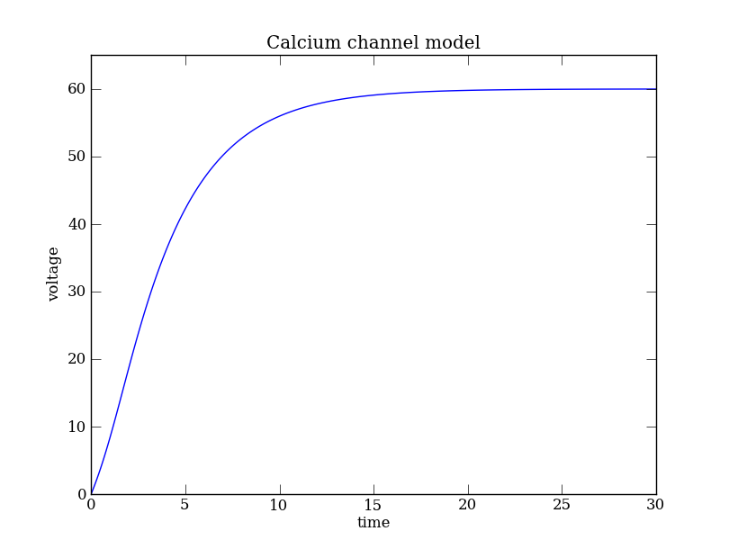
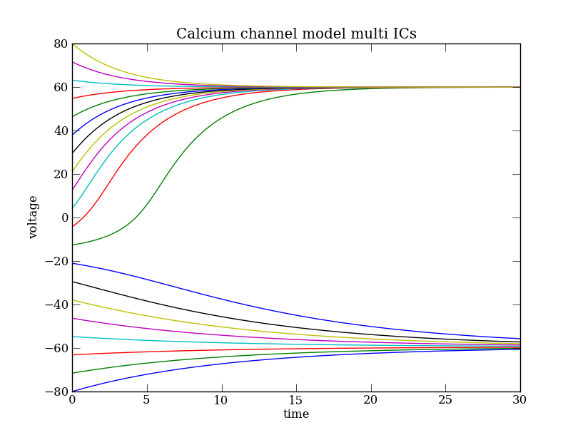
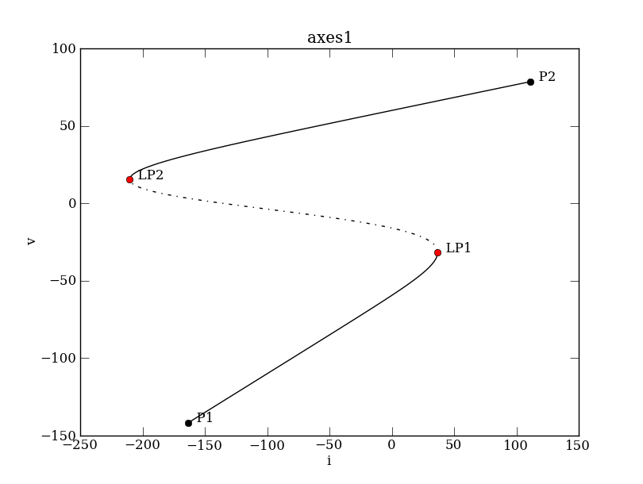
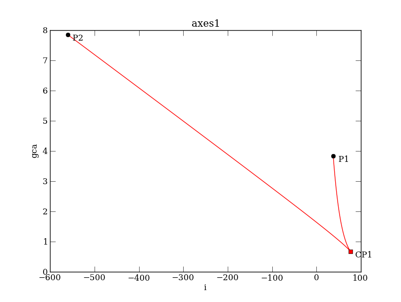

Site navigation:
A simple nonlinear model for the membrane voltage of a neuron is
\( C \frac{dV}{dt} = I + g_L (V_L - V) + g_{Ca} m(V)(V_{Ca} - V), \quad \) (Ca)
The system is specified using PyDSTool with
import PyDSTool as dst
import numpy as np
from matplotlib import pyplot as plt
# we must give a name
DSargs = dst.args(name='Calcium channel model')
# parameters
DSargs.pars = { 'vl': -60,
'vca': 120,
'i': 0,
'gl': 2,
'gca': 4,
'c': 20,
'v1': -1.2,
'v2': 18 }
# auxiliary helper function(s) -- function name: ([func signature], definition)
DSargs.fnspecs = {'minf': (['v'], '0.5 * (1 + tanh( (v-v1)/v2 ))') }
# rhs of the differential equation, including dummy variable w
DSargs.varspecs = {'v': '( i + gl * (vl - v) - gca * minf(v) * (v-vca) )/c',
'w': 'v-w' }
# initial conditions
DSargs.ics = {'v': 0, 'w': 0 }
The variable w is dummy, it merely tracks v. It is a necessary augmentation to permit the 2-parameter continuation of the limit points later on (which otherwise cannot be done for a 1D dynamical system). (This augmentation will be automatic and internal in a future version of PyCont.)
The solution of the dynamical system Eq. (Ca) can be computed using a Generator instance:
DSargs.tdomain = [0,30] # set the range of integration.
ode = dst.Generator.Vode_ODEsystem(DSargs) # an instance of the 'Generator' class.
traj = ode.compute('polarization') # integrate ODE
pts = traj.sample(dt=0.1) # Data for plotting
# PyPlot commands
plt.plot(pts['t'], pts['v'])
plt.xlabel('time') # Axes labels
plt.ylabel('voltage') # ...
plt.ylim([0,65]) # Range of the y axis
plt.title(ode.name) # Figure title from model name
plt.show()
Depending on your local configuration of the Matplotlib interactive mode, the last command plt.show() might not be necessary.

The system described by Eq. (Ca) is bistable. This can be easily seen integrating trajectories with different initial conditions:
plt.clf() # Clear the figure
plt.hold(True) # Sequences of plot commands will not clear the existing figure
for i, v0 in enumerate(np.linspace(-80,80,20)):
ode.set( ics = { 'v': v0 } ) # Initial condition
# Trajectories are called pol0, pol1, ...
# sample them on the fly to create Pointset tmp
tmp = ode.compute('pol%3i' % i).sample() # or specify dt option to sample to sub-sample
plt.plot(tmp['t'], tmp['v'])
plt.xlabel('time')
plt.ylabel('voltage')
plt.title(ode.name + ' multi ICs')
plt.show()

To see how the fixed points depend on the parameters we will plot bifurcation diagrams using the continuation class (ContClass). We start with the diagram that shows the equilibrium voltage v as a function of the input i.
# Prepare the system to start close to a steady state
ode.set(pars = {'i': -220} ) # Lower bound of the control parameter 'i'
ode.set(ics = {'v': -170} ) # Close to one of the steady states present for i=-220
PC = dst.ContClass(ode) # Set up continuation class
PCargs = dst.args(name='EQ1', type='EP-C') # 'EP-C' stands for Equilibrium Point Curve. The branch will be labeled 'EQ1'.
PCargs.freepars = ['i'] # control parameter(s) (it should be among those specified in DSargs.pars)
PCargs.MaxNumPoints = 450 # The following 3 parameters are set after trial-and-error
PCargs.MaxStepSize = 2
PCargs.MinStepSize = 1e-5
PCargs.StepSize = 2e-2
PCargs.LocBifPoints = 'LP' # detect limit points / saddle-node bifurcations
PCargs.SaveEigen = True # to tell unstable from stable branches
The LocBifPoints attribute tells PyCont what type of bifurcation should be tracked (see PyCont for details). In this example we specify that only saddle-node bifurcations ('LP') should be detected. The SaveEigen attribute is a boolean variable that determines whether or not the eigenvalues of the equilibrium points should be saved along the curve. We set this attribute to True because we want to know the stability along equilibrium curve. Once the continuation class is set up, we can compute the bifurcation diagram
PC.newCurve(PCargs)
PC['EQ1'].forward()
PC.display(['i','v'], stability=True, figure=3) # stable and unstable branches as solid and dashed curves, resp.

PC['EQ1'] now consists of a "struct" data type that specifies the particular equilibrium curve we prepared the system for. The information of the equilibrium curve can be accessed via the info() method:
>>> PC['EQ1'].info() PyCont curve EQ1 (type EP-C) Using model: Calcium_model Model Info ---------- Variables : v Parameters: gca, vca, c, i, vl, v1, v2, gl Continuation Parameters ----------------------- name = EQ1 freepars = ['i'] auxpars = [] MaxNumPoints = 450 MaxCorrIters = 5 MaxTestIters = 10 MaxStepSize = 2 MinStepSize = 1e-05 StepSize = 2 VarTol = 1e-06 FuncTol = 1e-06 TestTol = 0.0001 LocBifPoints = ['LP'] ... Special Points -------------- P1, P2, LP1, LP2
We can obtain detailed information about a particular special point calling the getSpecialPoint method. For instance, limit point LP2 has the following properties:
>>> print PC['EQ1'].getSpecialPoint('LP2')
i: -210.477955042
v: 15.4485534278
..
We now want to know the location of the limit points change as we vary the calcium conductance, i.e., the parameter gca. We start from one of the limit points, say LP2,
PCargs = dst.args(name='SN1', type='LP-C')
PCargs.initpoint = 'EQ1:LP2'
PCargs.freepars = ['i', 'gca']
PCargs.MaxStepSize = 2
PCargs.LocBifPoints = ['CP']
PCargs.MaxNumPoints = 200
PC.newCurve(PCargs)
PC['SN1'].forward()
PC['SN1'].backward()
PC['SN1'].display(['i','gca'], figure=4)
